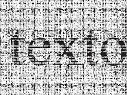
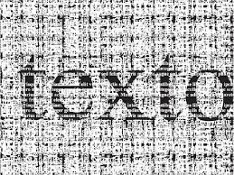

Proyecto TSG
El Proyecto TSG se enfoca en el desarrollo de un robot lector de texto, pensado como una solución innovadora para acercar la información escrita a todas las personas de una manera más accesible. La idea central es transformar los textos impresos en una experiencia comprensible y dinámica, brindando la posibilidad de escuchar lo que antes solo podía leerse en papel. Este proyecto surge como una respuesta a la necesidad de crear herramientas que faciliten la vida diaria y el aprendizaje, en especial para quienes encuentran barreras en la lectura tradicional. Con él se busca no solo apoyar la inclusión, sino también demostrar cómo la tecnología puede convertirse en un puente entre el conocimiento y quienes lo necesitan. Más allá de su función práctica.
 
